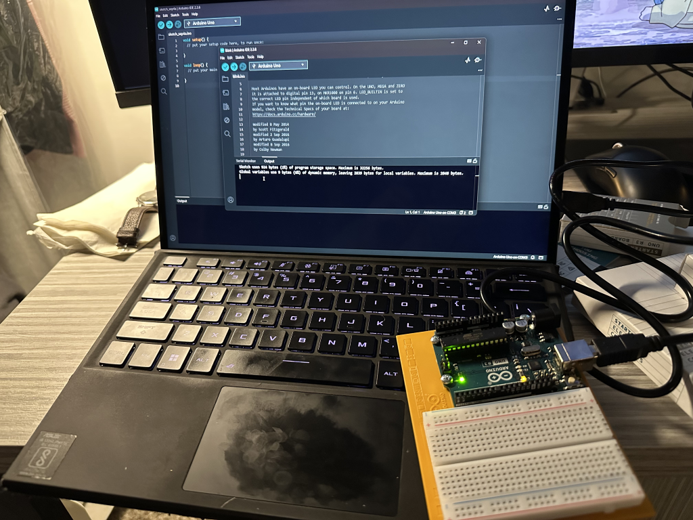

Arduino HW 0 - Introduction and Setup
IGME 470
This was my first time using an Arduino, ever. I was excited to get started with this new technology.
Opening the kit for the first time, I wasn't sure what to expect, but the ideas and possibilities with physical computing are endless. I used to build PCs for both myself and others, however that is mostly put together already, all I did was put the parts together, but with the arduinos I am the one making things work from scratch.

After unboxing the kit, I set up the Arduino IDE on my computer, and set up the platform that came with
the kit. The projects book states that it will help with keeping projects organized in the future, and I
can see how that would be the case.
Interestingly, I already had a few frustrations with how
small some pieces were, as I struggled to grab them, so hopefully that isn't the case in the future.
